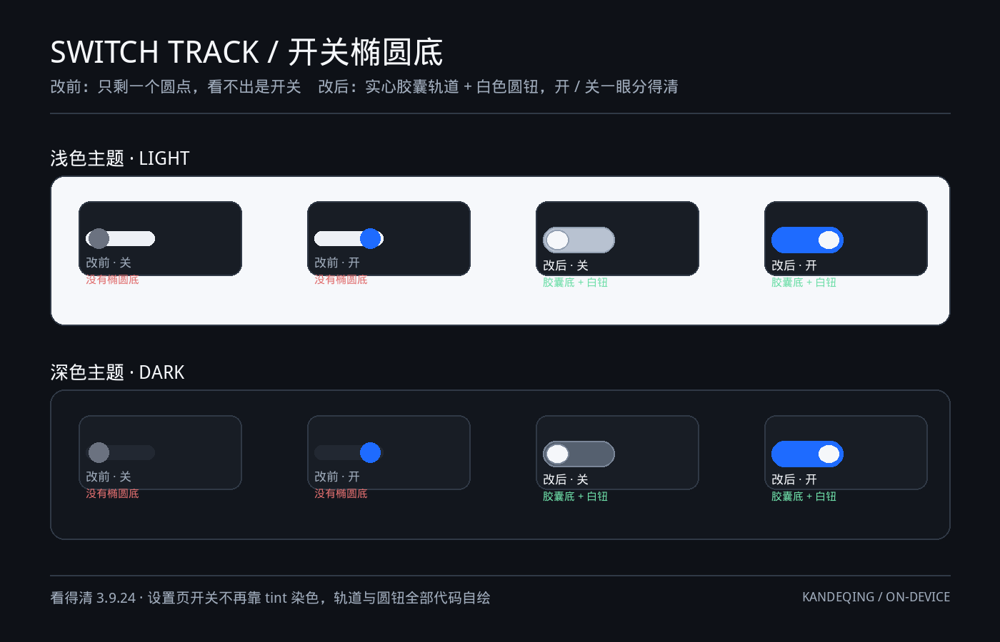

按住白球
画面立刻放大，手指挪到哪看到哪，松手还原。球心始终贴着触点，不会飘。
结果 → 药盒小字、快递单号，不用再找老花镜
屏幕边上两颗球，各管各的、都能单独拖到顺手的位置。白球管放大和点字朗读，绿喇叭球念你刚复制的内容。给还看得见、但看得很吃力的人。
当前版本 3.9.24Android 7.0+ 零 INTERNET 权限MIT
按住白球 → 放大 点白球再点字 → 朗读 点绿球 → 念刚复制的
这些数字都能在仓库里一条条数出来，不是形容词。
不用学手势、不用注册、不用联网。球会用自己的样子告诉你它在干什么。
画面立刻放大，手指挪到哪看到哪，松手还原。球心始终贴着触点，不会飘。
结果 → 药盒小字、快递单号，不用再找老花镜
白球变实心，再点屏幕上想听的那段字，就从这句开始念。再点一下球就停。
结果 → 微信里一大段话，可以闭着眼睛听完
刚复制的一段话，点一下就念；朗读中再点就停。两颗球各管各的，不抢手势。
结果 → 复制完不用切 App，也不必再装第二个工具
把「实时放大」「点哪读哪」和「复制完就能听」做进同一个无障碍服务、两颗独立球里，我们目前没有找到同类开源项目。
| 方案 | 放大 | 点哪读哪 | 复制朗读 | 要学手势 | 联网 / OCR |
|---|---|---|---|---|---|
| 系统放大 / 放大镜 App | ✅ | ❌ | ❌ | 部分 | 否 |
| Select to Speak / TalkBack | ❌ | 部分 | ❌ | 要学 | 否 |
| OCR 选区朗读类 | ❌ | ✅ | ❌ | 要框选 | 截图 + OCR |
| 剪贴板朗读类 | ❌ | ❌ | ✅ | 否 | 否 |
| 看得清 | ✅ | ✅ | ✅ | 点 / 按住 / 点绿球 | 都不需要 |
刻意只走 Android 官方无障碍树和 ClipboardManager：不截图、不做 OCR、不引入模型。 换来点一下就出声、零网络权限；代价是图片里和游戏自绘的字读不到。这是选的路，不是没修完。
从球的配色到设置页开关，都是「看得见」的改动。功能逻辑一直没动：抓字、放大、球心对齐、TTS、诊断日志全是原样。
旧实心球是径向渐变，中心最多 90%、边缘一路透明，调满也发虚。现在内圈用完整 alpha，只留最外一圈柔边抗锯齿。
早期那套低饱和配色已被高饱和明朗七色取代：雪白 / 电蓝 / 翠绿 / 琥珀 / 珊瑚 / 亮紫 / 青碧，按亮度自动配深或白对比描边。
安装包统一 kandeqing-v<版本>.apk，40 个历史包同步改名（字节不变），订阅里每条一眼分得清谁是谁。



仓库还接入了一份随 Git 受管的 AOCI 认知索引，源码改动由 SHA-256 基线检测漂移； 更早版本的配色预览已不再展示，免得被误认为是当前方案。两张预览图都是代码自绘，不是生图模型出的。
不是「我们承诺不上传」，是这个 App 根本没申请上网权限。可以直接翻 Manifest 核对，不需要信任任何人。
<!-- AndroidManifest.xml -->
<uses-permission android:name=
"android.permission.VIBRATE" />
<!-- 没有 INTERNET 这一项 -->
<!-- 不是我们克制，是系统不给 -->把边界写清楚，比把功能吹满更让人放心。
老花、低视力、弱视、术后恢复、看一会儿就眼酸的人；帮爸妈装手机的儿女；想「少看多听」让眼睛歇一会儿的人。看得见，只是看得很吃力。
完全看不见的朋友，系统自带的 TalkBack 更合适。图片里的字、游戏和 Canvas 自绘的字，本工具读不到 —— 只走无障碍树，不做 OCR，需要读图请找 OCR 类工具。
仓库里有一份随 Git 受管、不进 APK 的认知索引
（aoci.txt / aoci.meta.txt / aoci.code.txt /
AGENTS.md / .aoci/）：每个源码文件的职责、强关系，以及
「推不出、删了就会改错」的硬约束都在里面。SHA-256 基线会在自检里检测漂移，
改了源码没更新认知会被挡在提交前。
这一页的设计决策同样写在 docs/design.md，并受 verify_pages.py 校验。
固定直链永远指向最新版，不重定向、不用换链接；新版可直接覆盖安装，不用卸载。
当前版本 3.9.24 · 文件名 kandeqing-v3.9.24.apk · 固定签名，覆盖安装不丢设置
实测返回 application/atom+xml / application/json。
里面是全部历史版本（球球 2.0 → 当前版本，逐版一条），最新在最前，
每条附件直指该版本真 APK，带大小与 SHA256，文件名是
kandeqing-vX.Y.Z.apk。CI 每次发版追加一条，旧版本不删。
jsDelivr 同名文件有几小时缓存，CI 发版会主动清；想完全无缓存用 Pages 备用
https://zjh1934.github.io/kandeqing/feed.atom。
旧路径 docs/subscribe.atom 内容相同，订阅请一律用 docs/feed.atom。
实测已是 3.9.24，不重定向、链接永不变。要指定历史版本，从上面订阅里选对应条目最稳
（版本化路径不受同名 CDN 缓存影响）。备用：
https://cdn.jsdelivr.net/gh/zjh1934/kandeqing@main/apk/kandeqing-latest.apk、
https://github.com/zjh1934/kandeqing/releases/latest/download/kandeqing-latest.apk。
Obtainium 类 App 填仓库 https://github.com/zjh1934/kandeqing 让它自己解析资产。
别填 GitHub 自带的 releases.atom：条目链接是 Release 网页（text/html），
下载器会报「server returned HTML page」。订阅框和下载框要的不是同一个东西。
绿球不见了？「朗读」页「复制朗读」开关默认开，关掉它绿球就收起，白球照常用。
复制完没自动念？「复制后自动朗读」默认关，要手动打开；Android 10 起系统限制后台读剪贴板，自动读属尽力而为，点一下绿球最稳。
球太透明、找不到？「悬浮球」页把不透明度拉到最右（3.9.23 起 100% 真不透明），再换成电蓝 / 翠绿 / 这些鲜亮颜色；两个球都能单独拖到顺手的位置。
球过一会儿消失？部分国产 ROM 的省电策略会自动关掉无障碍服务，到「电池 / 省电」把「看得清」设成不限制即可。
放大后字发毛？放大是拉开屏幕像素，不会重新排版，这是系统放大的固有代价；想又大又清楚，用朗读。
不用注册，不用联网，不用学手势。给家里看小字费劲的人也发一份。
当前版本 3.9.24 · Android 7.0+ · MIT · 固定签名，可直接覆盖安装